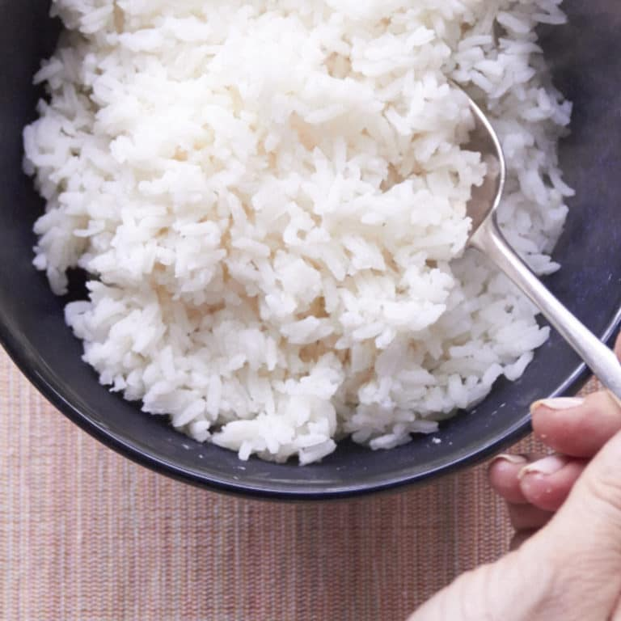

Rice

Description
If you’ve ever cooked white rice and it turned out sticky, undercooked, or stuck to the bottom of the pan, you’re not alone. We’ve all been there. In fact, I used to avoid cooking rice for this very reason, chalking my failures up to not owning a rice cooker.
However, since then I’ve perfected my go-to method for cooking white rice that’s fluffy, tender, and delicious every time. Plus, it just requires a saucepan and lid (no fancy rice cooker). Let me show you how it’s done.
Ingredients
- 1 Cup White Rice
- 2 Cups Water
Steps
- Add rice and water to a medium saucepan and bring to a boil over high heat. Once boiling, lower heat to a simmer and cover. Ensure it’s simmering and not boiling or the rice can cook too quickly.
- Simmer until water is completely absorbed and rice is tender – about 15-25 minutes (will depend on size and freshness of rice). Drain off any excess water if there is any (there shouldn’t be).
- I like to turn off the heat, remove the lid, fluff with a fork, put the lid back on, and let rest for 10 minutes so the moisture redistributes to prevent mushy rice. This rice is delicious in things like stir fries, sushi, with stews, and more!
- Store cooled leftovers covered in the refrigerator up to 5-6 days, or in the freezer up to 1 month. Reheat in the microwave or on the stovetop with a little oil or water until warm.